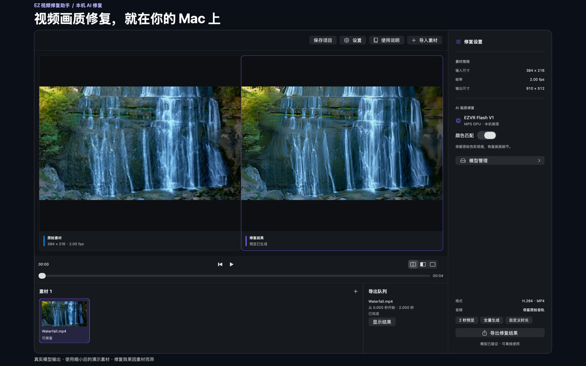
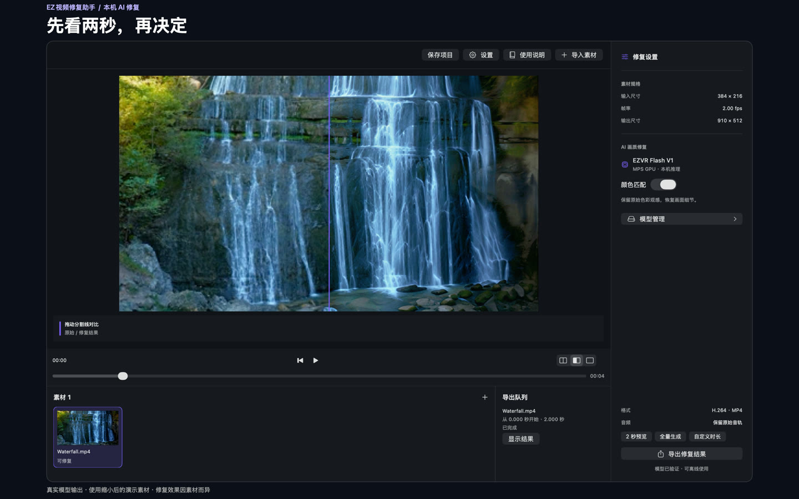
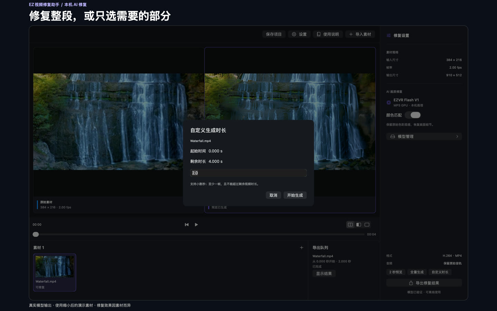
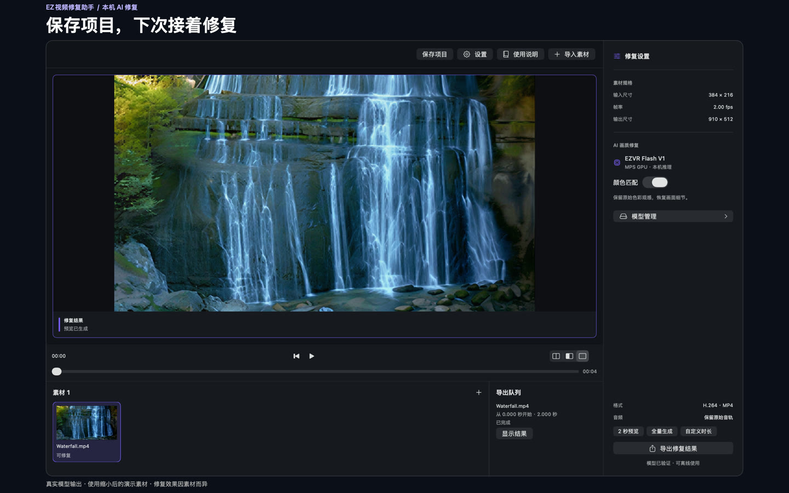
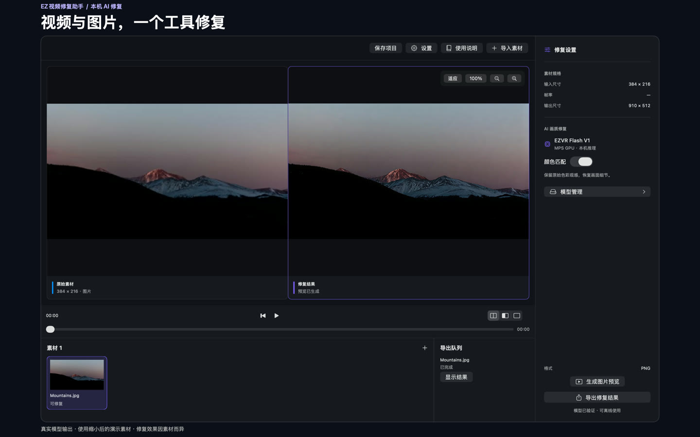

先看效果，再生成
从当前时间点生成 2 秒预览。合适了，再决定是否修复整段视频。
从视频里选两秒，看看修复后的细节，再决定要处理哪一段。照片也能直接在 Mac 上修复。
0.0.4（构建 4）。适用于 Apple Silicon Mac，需 macOS 14 或更高版本。打开 DMG，将 EZVideoRepair 拖入「应用程序」。

此视频暂时无法在页面中播放。 直接打开 MP4 文件
原作 Albert’s Lyrebird OR 由 Aviceda 拍摄。我们截取原作第 7 至 37 秒，移除声音并转为 MP4，制作了四个修复版本及封面图。原作及上述改编均采用 CC BY-SA 3.0 许可。
看看如何导入视频、选取前 5 秒并播放修复结果。录屏剪短了等待时间，结尾同步对比 640 × 480 的原片和 1280 × 960 的修复画面。
此视频暂时无法在页面中播放。 直接打开 MP4 文件
实验影像由美国地质调查局（USGS）摄于 1999 年 9 月 22 日，记录水流通过受侵蚀沉积层的过程。 查看 USGS 原始记录（英文）
点击截图可查看大图。示例使用缩小后的素材，实际效果取决于原片画质。




视频和照片都在你的 Mac 上处理。首次设置完成后，即可离线修复。
少一点干扰，多一点专注
不把简单的修复流程变成一整套复杂工作台。导入、预览、生成，每一步都清楚。
从当前时间点生成 2 秒预览。合适了，再决定是否修复整段视频。
支持整段生成和自定义时长；只修复真正需要的部分。
导入横屏或竖屏视频，选一段预览效果；也可以单独打开一张照片，查看修复后的细节。
保存项目后，下次打开就能找到之前的设置和已完成的结果。
相同素材与参数优先复用已完成结果，减少重复等待。
首次设置所需的文件可在后台下载。你可以查看进度，暂停后再继续。
从素材到结果
打开 DMG，将 EZVideoRepair 拖入「应用程序」。首次启动时，按提示完成设置。
导入素材，选择开始时间，生成 2 秒预览并检查画面。
选择整段或自定义时长，完成后导出结果，也可以保存项目稍后继续。
不会。视频和照片始终在你的 Mac 上处理。首次设置可能需要联网下载文件。
当前修复功能仅支持 Apple Silicon Mac，不支持 Intel Mac 或 Windows。
耗时取决于 Mac 配置、素材和时长，可能远长于视频播放时长。可以先生成 2 秒预览，再决定处理范围。
需要。项目保存设置和修复结果，并引用原片的位置。换一台 Mac 时，请一起复制项目和原片。
V1 和 V2 的 INT8、BF16 模型都可按层从 SSD 读取权重，V1 需要相应的推理图。在配备 24 GB 内存的 M4 Pro 上，用 V2 INT8 修复一段 30 秒视频时，峰值内存从 12.13 GB 降至 8.96 GB，耗时从 366 秒增至 379 秒。此模式默认关闭。
V1 会在修复后裁去新加的补边，保留原片自带的黑边。有 512×512 方形推理图时，较大的图片和视频可重叠分块修复。V2 会对超出整帧处理范围的视频分块。分块上限为单边 4096 像素、每帧共 9,437,184 像素。
下载 Mac 版（DMG） 打开 DMG，将 EZVideoRepair 拖入「应用程序」。 下载上一版 0.0.3.
从预览到导出，你的视频和照片都在自己的 Mac 上处理，无需上传。修复后的作品由你决定是否分享。
下载 Mac 版（DMG）